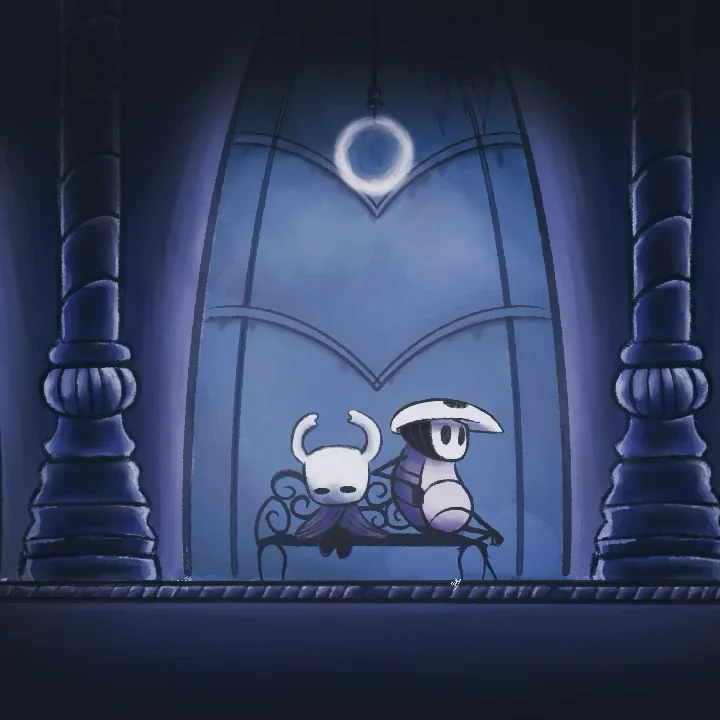

Hollow Knight es un videojuego perteneciente al género metroidvania desarrollado y publicado por Team Cherry
Soundtrack| Personajes | Amuletos | Lugares |
|---|---|---|
| Cloth | Coraza robusta | Bocasucia |
| Hornet | Devoraalmas | Cuenca Antigua |
| Quirrel | Atrapaalmas | Estacion del Rey |